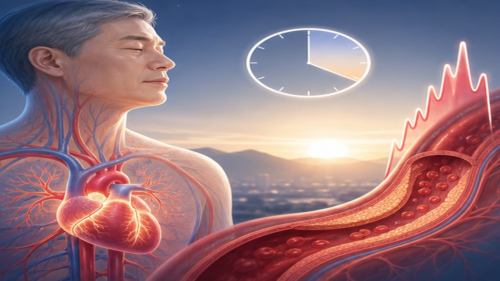
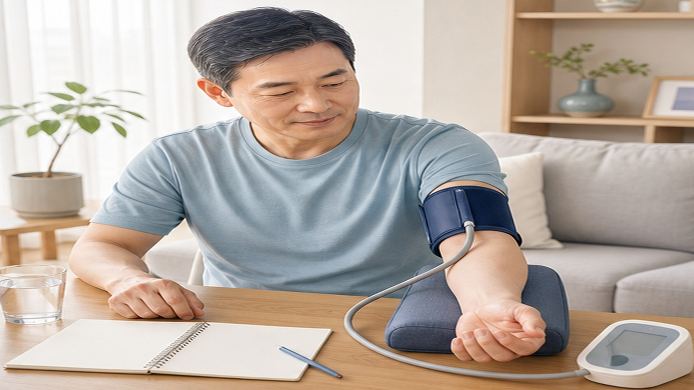
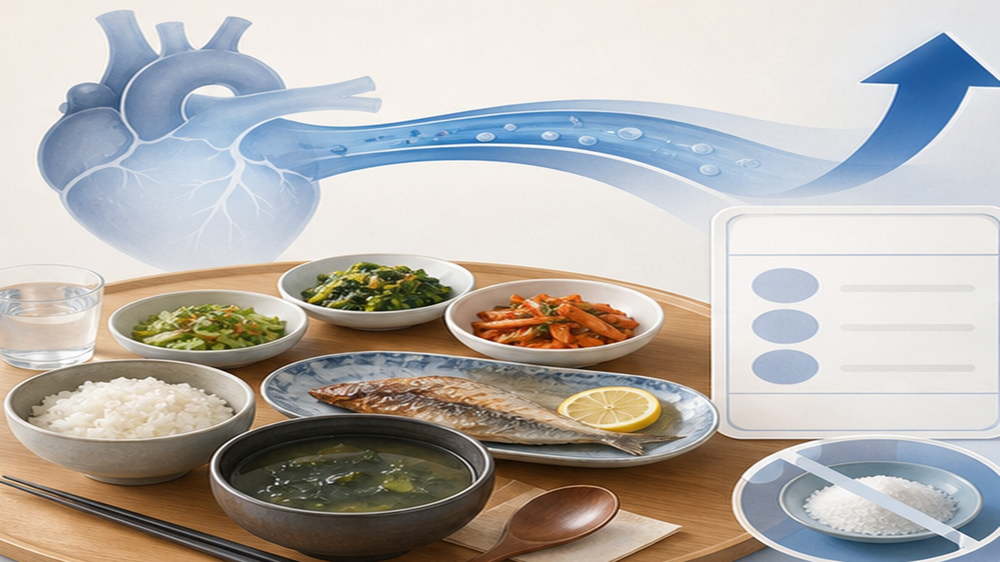

PATIENT EDUCATION · CARDIOLOGY
아침 고혈압,
왜 중요할까요?
기상 직후의 혈압이 심장과 뇌를 지키는 열쇠입니다
02
CONTENTS · TODAY'S OUTLINE
오늘 함께 알아볼 내용
진단부터 치료, 생활관리까지 — 8가지 핵심 주제
1아침 고혈압이란 무엇인가요?
2왜 아침 혈압이 위험한가요?
3가정에서 혈압 재는 법 (722 규칙)
4병원에서의 정밀 검사 (ABPM)
5목표로 해야 할 혈압 수치
6아침 고혈압 약물 치료
7식사 · 운동 · 생활습관 관리
8꼭 기억해야 할 8가지
03
CHAPTER 01 · DEFINITION
아침 고혈압이란 무엇인가요
기상 후 1~2시간 사이 혈압이 비정상적으로 높은 상태
135/85
mmHg 이상
아침 가정 혈압 기준
21%
한국 일차진료
가면고혈압 유병률
30%
약 1,300만 명
한국 성인 고혈압 유병률
아침 고혈압은 병원에서는 정상이지만 집에서 아침에 재면 높게 나오는 '가면 고혈압' 형태로 자주 숨어 있습니다. 한국인은 서양인에 비해 아침 혈압이 더 많이, 더 심하게 오르는 경향이 있어 반드시 가정에서 측정해 확인해야 합니다.
04
CHAPTER 01 · SUBTYPES
아침 고혈압의 세 가지 모습
한 가지 병이 아니라 서로 겹치는 세 가지 양상입니다
SUBTYPE · 01
아침 혈압 급등형
자고 일어난 뒤 2시간 이내에 수축기 혈압이 35~55 mmHg 이상 급격히 오르는 경우. 교감신경이 갑자기 활성화되면서 심장과 혈관에 큰 부담을 줍니다.
SUBTYPE · 02
가면(숨은) 아침 고혈압
진료실에서는 140/90 미만으로 정상이지만, 집에서 아침에 재면 135/85 이상이 나오는 유형. 병원 측정만 믿으면 놓칠 수 있어 가장 위험합니다.
SUBTYPE · 03
야간 · 아침 지속형
밤에도 혈압이 낮아지지 않고(non-dipper), 오히려 밤이 낮보다 높은(riser) 유형. 총 사망 위험이 1.4배, 심부전 위험이 2.5배까지 증가합니다.
DIAGNOSIS · KEY
진단의 열쇠 — 가정 혈압 측정
세 가지 유형 모두 진료실 혈압만으로는 판별이 어렵습니다. 집에서 아침에 1주일 꾸준히 혈압을 재야 정확한 진단이 가능합니다.
05
CHAPTER 02 · WHY DANGEROUS
왜 아침 혈압이 가장 위험할까요
뇌졸중과 심근경색이 아침 6~12시에 가장 많이 발생합니다
RISK · 01
뇌졸중 49% 증가
아침 6시부터 12시 사이에 뇌졸중 발생률이 다른 시간대보다 49% 더 높습니다. 수축기 혈압이 10 mmHg 오를 때마다 뇌졸중 위험도 11% 증가합니다.
RISK · 02
심근경색 위험 6배
아침 가정 혈압이 155 mmHg 이상이면, 정상인 분에 비해 뇌졸중 위험은 6.0배, 심근경색 위험은 6.2배까지 올라갑니다 (HONEST 연구).
RISK · 03
혈관 내피 손상
아침에는 교감신경이 급격히 활성화되어 심박수가 빨라지고 혈관이 수축합니다. 혈관 내벽에 강한 충격이 가해져 동맥경화반이 터질 수 있습니다.
RISK · 04
혈전 형성 증가
아침에는 혈소판 응집력이 높아지고 혈액이 끈적해지는 '고응고 상태'가 됩니다. 좁아진 혈관에서 혈전(핏덩이)이 더 쉽게 만들어집니다.

06
CHAPTER 02 · RISK QUANTIFIED
아침 고혈압, 얼마나 위험한가요
대규모 연구로 확인된 위험도 — 숫자가 클수록 위험이 큽니다
어떤 상태인가요
위험 증가 배수
무엇에 대한 위험
아침 가정 혈압 ≥ 155 mmHg
6.0배 ↑
뇌졸중 발생
아침 가정 혈압 ≥ 155 mmHg
6.2배 ↑
심근경색 등 관상동맥질환
가면(숨은) 아침 고혈압
2.7배 ↑
뇌졸중 발생
밤에 오히려 혈압이 올라감 (riser)
2.5배 ↑
심부전 발생
밤에 혈압 강하 부족 (non-dipper)
1.4배 ↑
전체 사망 위험
아침 혈압 10 mmHg ↑ 당
1.1배 ↑
뇌졸중 발생
핵심
아침 혈압이 10 mmHg만 높아도 뇌졸중 위험이 올라갑니다. 아침 혈압 155 mmHg 이상은 반드시 치료가 필요합니다.
07
CHAPTER 03 · HOW TO MEASURE
집에서 혈압 재는 법 — 722 규칙
7일 동안 아침·저녁 각 2회씩. 이것이 진단의 첫걸음입니다
1
7일 연속 측정
최소 7일간 매일 측정합니다. 첫날은 제외하고 평균을 내는 것이 표준입니다.
2
아침 측정
기상 후 1시간 이내, 소변 후, 약 복용 · 식사 전에 측정합니다.
3
저녁 측정
취침 직전 측정. 식사 · 목욕 · 운동 후 1시간은 피합니다.
4
2회씩 평균 기록
매회 2번 측정, 1~2분 간격으로. 두 값의 평균을 기록지에 남깁니다.
측정 원칙
평균 ≥ 135/85 mmHg면 아침 고혈압 — 의사에게 기록을 꼭 보여주세요. 반드시 팔뚝형(상완형) 자동 혈압계 사용 — 손목형 · 반지형 · 스마트워치는 부정확합니다. 측정 전 5분간 안정, 대화 · 흡연 · 커피는 피합니다.

08
CHAPTER 04 · ABPM
병원 정밀 검사 — 24시간 활동혈압 (ABPM)
팔에 작은 혈압계를 달고 하루를 생활하며 낮 · 밤 혈압을 모두 측정합니다
METHOD · 01
검사 방법
팔에 자동 혈압계를 부착하고 30분마다 낮 · 밤 24시간 자동 측정합니다. 평소처럼 생활 · 수면하시면 됩니다. 건강보험 급여 대상 (E6547)입니다.
INDICATION · 02
이런 분께 필요합니다
병원 · 가정 혈압 수치가 서로 다른 경우, 약을 먹어도 조절되지 않는 경우, 당뇨 · 신장병 · 수면무호흡이 있는 경우, 밤 혈압 평가가 필요한 경우.
REFERENCE · 03
기준 수치 (ABPM)
24시간 평균 130/80 미만, 낮 평균 135/85 미만, 밤 평균 120/70 미만이 정상입니다. 이 수치를 넘으면 치료 강화가 필요합니다.
UNIQUE VALUE · 04
야간 혈압 패턴 확인
정상이라면 밤에 혈압이 10~20% 떨어져야 합니다. 떨어지지 않거나 (non-dipper) 오히려 오르는 (riser) 경우를 확인할 수 있는 유일한 방법입니다.
09
CHAPTER 05 · TARGET BP
우리의 목표 혈압은
아침에 집에서 잰 혈압을 기준으로 합니다
GENERAL · 01
일반 목표 — 135 / 85 mmHg 미만
대부분의 고혈압 환자는 아침 가정 혈압이 135/85 mmHg 미만이면 잘 조절되고 있는 것입니다. 가정에서 일주일간 측정한 평균 혈압으로 판정합니다.
HIGH RISK · 02
고위험군 목표 — 개별 조정
당뇨병, 만성신장병, 단백뇨, 관상동맥질환, 심부전, 뇌졸중 · 심근경색 과거력이 있거나 항혈전제를 복용 중인 분은 담당의와 더 엄격한 목표를 개별 설정합니다.
RATIONALE · 03
왜 더 엄격한 목표가 필요할까요
일부 고위험군에서는 더 낮은 목표가 도움이 될 수 있지만, 어지럼·신기능·낙상 위험·나이를 함께 보며 무리하지 않게 조정해야 합니다.
PERSONALIZE · 04
본인의 목표는 주치의와 상의
나이, 기저 질환, 복용 약물, 혈압 변동성에 따라 목표가 달라질 수 있습니다. 진료 시 가정혈압 기록을 함께 보며 본인에게 맞는 목표를 정합니다.
10
CHAPTER 06 · MEDICATION
아침 고혈압 약물 치료 원칙
'24시간 지속되는 약'을 '아침'에 한 번 복용하는 것이 기본입니다
PRINCIPLE · 01
24시간 지속형 1일 1회 약제
약효가 24시간 일정하게 유지되어 다음 날 아침까지 혈압을 지켜주는 Long-acting 제제 — 텔미사르탄(트윈스타), 올메사르탄(세비카), 피마사르탄(듀카브, 카나브), 암로디핀, S-암로디핀 등이 대표적입니다.
PRINCIPLE · 02
아침 복용이 원칙 — 매일 같은 시각에
특별한 이유가 없는 한 약은 아침에 복용합니다. 기상 직후 양치 · 세수와 함께 드시면 빠뜨리지 않습니다. 대규모 연구(TIME, BedMed 2025)에서 저녁 복용이 더 좋다는 증거는 없었습니다.
PRINCIPLE · 03
복합제(SPC) 적극 활용
ARB + 칼슘길항제(CCB)를 한 알에 합친 복합제(트윈스타, 세비카, 듀카브, 아모잘탄 등)가 한국에서 가장 많이 처방됩니다. 복약이 편해져 혈압 조절률이 훨씬 좋아집니다.
PRINCIPLE · 04
저녁 복용은 ABPM 확인 후에만
ABPM으로 밤 혈압이 높거나 non-dipper · riser 패턴이 확인된 경우에 한해, 일부 약제를 저녁으로 옮기는 것을 주치의와 상의할 수 있습니다. 스스로 임의로 바꾸지 않습니다.
11
CHAPTER 06 · MEDICATION CAUTIONS
약 복용 시 반드시 지켜야 할 것
한 번의 실수가 하루 종일의 혈압 조절을 망칠 수 있습니다
!
절대 임의로 약을 중단하지 마세요
혈압이 정상이 되었다고 약을 끊으면 수일 내 다시 오르며, 특히 아침 급등으로 뇌졸중 위험이 크게 증가합니다. 반드시 주치의와 상의 후 조정합니다.
!
매일 같은 시각에 복용하세요
복용 시각이 들쭉날쭉하면 약효가 끊기는 구간이 생겨 아침 혈압이 급등합니다. 아침 기상 직후로 시간을 고정하고, 알람 · 약통을 활용합니다.
!
혈압이 잘 조절된다고 가정 혈압 측정을 중단하지 마세요
약이 효과를 내고 있는지, 계절 변화로 혈압이 바뀌지 않았는지 확인하려면 주 1~2회라도 아침 혈압 측정을 꾸준히 이어가야 합니다.
12
CHAPTER 07 · LIFESTYLE · DIET
생활습관 ① 저염식이 가장 중요합니다
한국인은 세계보건기구(WHO) 권고량의 1.6배 나트륨을 먹고 있습니다
3,136
mg
한국인 하루 평균 나트륨
2,000
mg 이하
목표 섭취량 (소금 5g)
50%
절반 이상
나트륨의 절반은 장 · 찌개 · 김치
국물은 반만 드시고, 김치는 한 끼에 1~2 조각으로 줄이며, 찌개에 밥을 말아 먹는 습관은 피합니다. 라면 · 국수 · 인스턴트 식품은 나트륨이 한 끼 목표량을 넘어가므로 가급적 피합니다. 대신 생채소 · 과일 · 무염 견과류를 간식으로 활용하면 자연스럽게 칼륨이 나트륨을 배출해 혈압을 낮추는 데 도움이 됩니다.

13
CHAPTER 07 · DAILY HABITS
생활습관 ② 이렇게 실천하세요
아침 고혈압을 이기는 일상의 작은 습관들
+
이렇게 하세요
- 아침에 일어나 바로 일어서지 말고 1~2분 앉아 안정 후 기상
- 찬물 세수보다는 미지근한 물로 서서히 얼굴에 적응
- 겨울철 외출은 약 복용 30분 후, 해 뜬 뒤에 시작
- 주 3~5회 중강도 유산소 운동 (빠르게 걷기 30분)
- 하루 7시간 이상 수면, 코골이가 심하면 수면검사 의뢰
- 싱겁게 먹기, 채소 · 과일 하루 5접시 이상
−
이것은 피하세요
- 새벽 5~6시 야외 운동 (혈압 급등 시간대와 겹침)
- 일어나자마자 찬물 마시기 · 차가운 실외로 나가기
- 과음 — 남성 소주 2잔, 여성 1잔 이하
- 흡연 — 한 대만 피워도 아침 혈압 10~15 mmHg 급등
- 뜨거운 사우나 · 반신욕 직후 찬물 샤워 반복
- 혈압약 빠뜨리고 다음날 두 배 먹기 (위험합니다)
14
CHAPTER 08 · SEASONAL CAUTION
겨울철 · 새벽이 가장 위험합니다
기온이 1°C 떨어질 때마다 수축기 혈압은 0.26 mmHg 오릅니다
!
새벽 야외 운동은 피하세요
새벽 5~6시는 교감신경이 가장 활발해 혈압이 급등하는 시간이면서 바깥 기온도 가장 낮습니다. 두 위험이 겹쳐 고령 고혈압 환자에게 심근경색 · 뇌졸중 위험이 가장 높은 시간대입니다. 운동은 해가 뜬 뒤로 미룹니다.
!
외출 전 실내에서 먼저 몸을 데우세요
갑자기 찬 공기에 노출되면 혈관이 수축해 혈압이 10~20 mmHg 오를 수 있습니다. 외출 10분 전 실내에서 가벼운 스트레칭, 따뜻한 물 한 잔, 약 복용 후 30분 뒤 나서는 것이 안전합니다.
!
이런 증상은 즉시 119 · 응급실로
갑작스러운 두통 · 어지럼증, 한쪽 팔다리 힘빠짐, 말이 어눌해짐, 가슴 통증, 호흡곤란이 있으면 즉시 119에 연락하거나 응급실로 가세요. 혈압 측정보다 증상이 먼저입니다.
15
CHAPTER 09 · ACTION
꼭 기억해야 할 핵심 8가지
오늘부터 실천할 수 있는 아침 고혈압 관리 수칙
01
아침 기상 후 1시간 이내, 식사 · 약 복용 전에 혈압 측정
02
7일 연속, 아침 · 저녁 각 2회씩 재서 평균 기록 (722 규칙)
03
평균 아침 혈압 135/85 mmHg 미만이 기본 목표 (고위험군은 개별 조정)
04
약은 매일 같은 아침 시각에, 절대 임의 중단 금지
05
병원 혈압이 정상이어도 아침 혈압 높으면 반드시 치료
06
싱겁게 먹기 — 국물 · 김치 · 장류 줄이고 채소 · 과일 늘리기
07
새벽 야외 운동 금지, 해 뜬 뒤 약 복용 30분 후 외출
08
코골이 · 주간 졸림 · 비만 동반되면 수면무호흡 검사
END OF DECK · THANK YOU
매일 아침의 작은 기록이
평생의 건강을 지킵니다
꾸준한 측정과 규칙적인 복약으로 아침 고혈압, 충분히 관리할 수 있습니다
Phone
031-893-4560
Address
경기 용인 수지구
광교중앙로 298, 4층
광교중앙로 298, 4층
Hours
평일 08:30~18:30
토요일 08:30~13:30
토요일 08:30~13:30
SCAN TO REVISIT
집에서 다시 보기
QR을 스캔하면 핸드폰에서
같은 자료를 다시 볼 수 있어요
같은 자료를 다시 볼 수 있어요